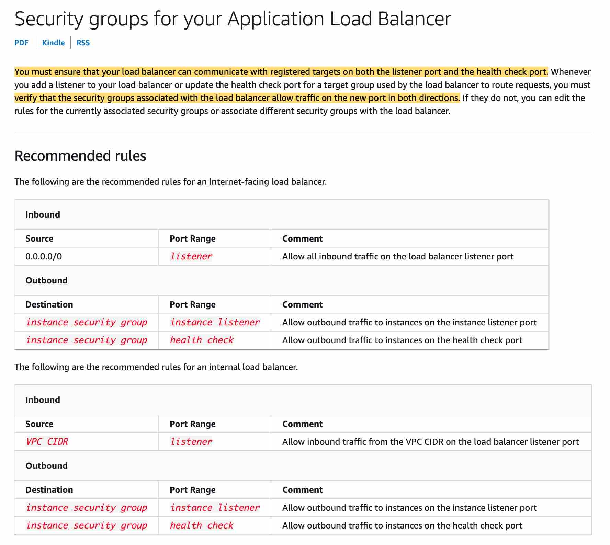
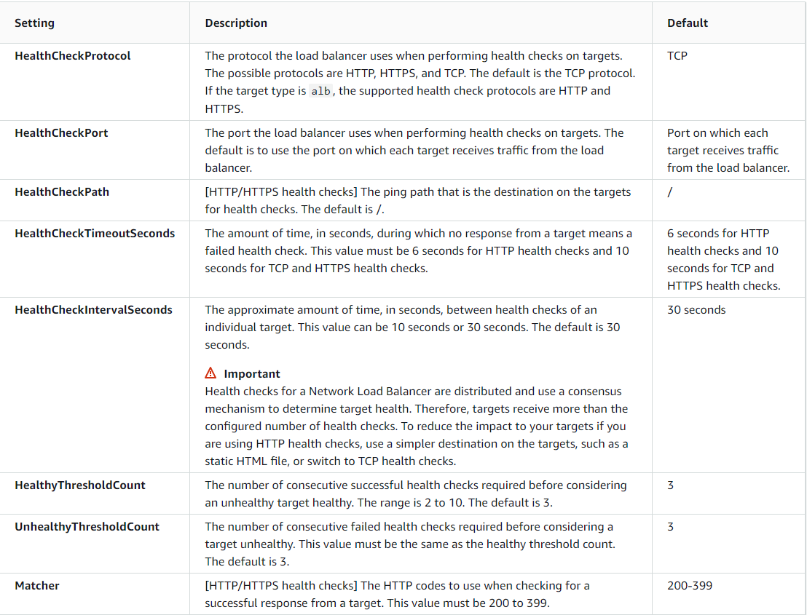

Application Load Balancer
ELB cannot distribute incoming traffic for targets deployed in different regions.
It provides content-based routing and support for container-based applications.
Application Load Balancer can route a request to a service based on the content of the request.
Host-based Routing:
You can route a client request based on the Host field of the HTTP header allowing you to route to multiple domains from the same load balancer.Path-based Routing:
You can route a client request based on the URL path of the HTTP header. HTTP header-based routing: You can route a client request based on the value of any standard or custom HTTP header. HTTP method-based routing: You can route a client request based on any standard or custom HTTP method. Query string parameter-based routing: You can route a client request based on the query string or query parameters. Source IP address CIDR-based routing: You can route a client request based on source IP address CIDR from where the request originates. Path-based Routing Overview: You can use path conditions to define rules that route requests based on the URL in the request (also known as path-based routing). The path pattern is applied only to the path of the URL, not to its queryNetwork Load Balancer
Functions at the fourth layer of the Open Systems Interconnection (OSI) model. It can handle millions of requests per second. After the load balancer receives a connection request, it selects a target from the target group for the default rule. It attempts to open a TCP connection to the selected target on the port specified in the listener configuration.
Network Load Balancer is best suited for use-cases involving low latency and high throughput workloads that involve scaling to millions of requests per second. Network Load Balancer operates at the connection level (Layer 4), routing connections to targets - Amazon EC2 instances, microservices, and containers – within Amazon Virtual Private Cloud (Amazon VPC) based on IP protocol data. Including bastion hosts in your VPC environment enables you to securely connect to your Linux instances without exposing your environment to the Internet. After you set up your bastion hosts, you can access the other instances in your VPC through Secure Shell (SSH) connections on Linux. Bastion hosts are also configured with security groups to provide fine-grained ingress control. You need to remember that Bastion Hosts are using the SSH protocol, which is a TCP based protocol on port 22. They must be publicly accessible.
Request Routing and IP Addresses
- If you specify targets using an instance ID, traffic is routed to instances using the primary private IP address specified in the primary network interface for the instance. The load balancer rewrites the destination IP address from the data packet before forwarding it to the target instance. If you specify targets using IP addresses, you can route traffic to an instance using any private IP address from one or more network interfaces. This enables multiple applications on an instance to use the same port. Note that each network interface can have its security group. The load balancer rewrites the destination IP address before forwarding it to the target.
 Application Load Balancer + dynamic port mapping Application Load Balancer can automatically distribute incoming application traffic across multiple targets, such as Amazon EC2 instances, containers, IP addresses, and Lambda functions. It can handle the varying load of your application traffic in a single Availability Zone or across multiple Availability Zones. Dynamic port mapping with an Application Load Balancer makes it easier to run multiple tasks on the same Amazon ECS service on an Amazon ECS cluster.
Network Load Balancer + dynamic port mapping - Network Load Balancer is best suited for use-cases involving low latency and high throughput workloads that involve scaling to millions of requests per second. Network Load Balancer operates at the connection level (Layer 4), routing connections to targets - Amazon EC2 instances, microservices, and containers – within Amazon Virtual Private Cloud (Amazon VPC) based on IP protocol data. Network Load Balancer requires one certificate per TLS connection to encrypt traffic between client & NLB and forward decrypted traffic to target servers. Using AWS Certificate Manager is a preferred option, as these certificates are automatically renewed on expiry.
ALB supports Server Name Indication (SNI), enabling hosting multiple domain names with different TLS certificates behind a single ALB. With SNI, multiple certificates can be associated with listeners in ALB, enabling each web application to use separate certificates.